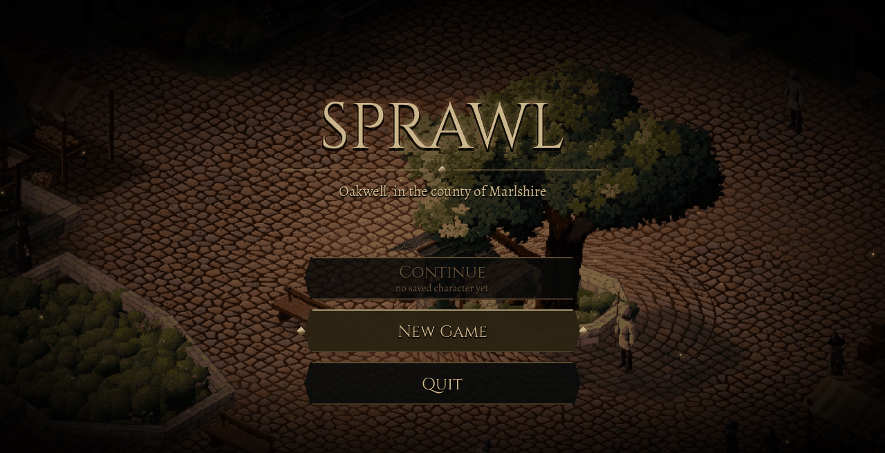
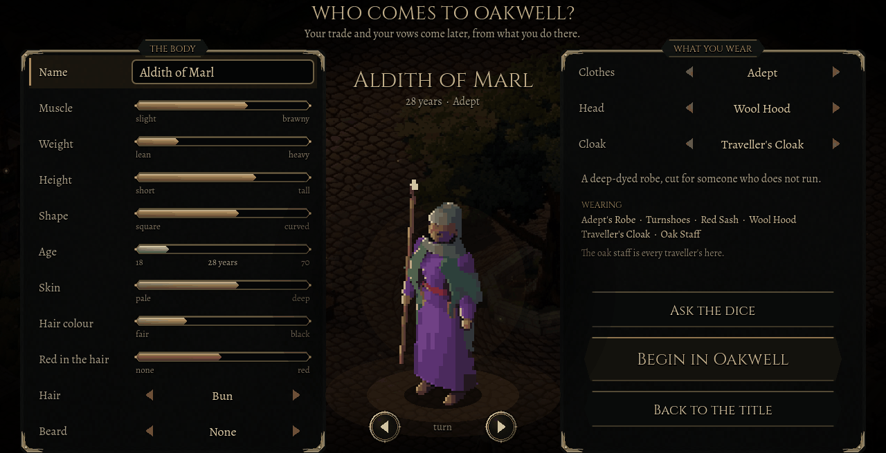
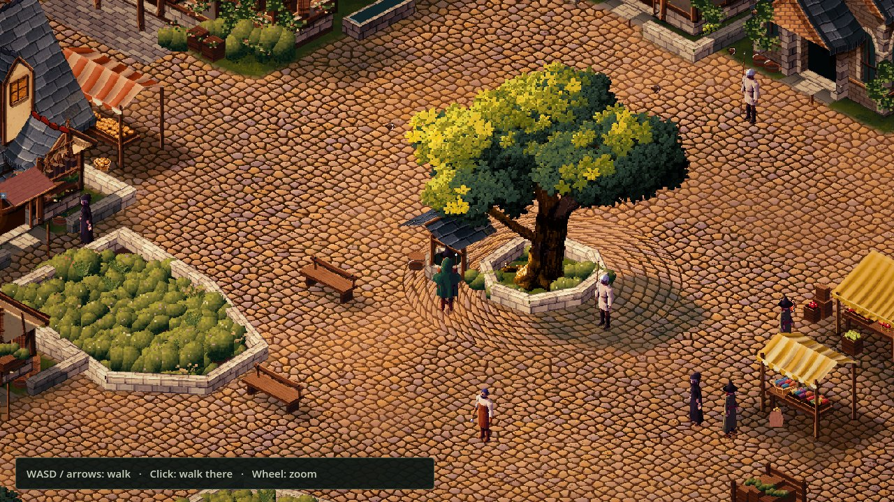
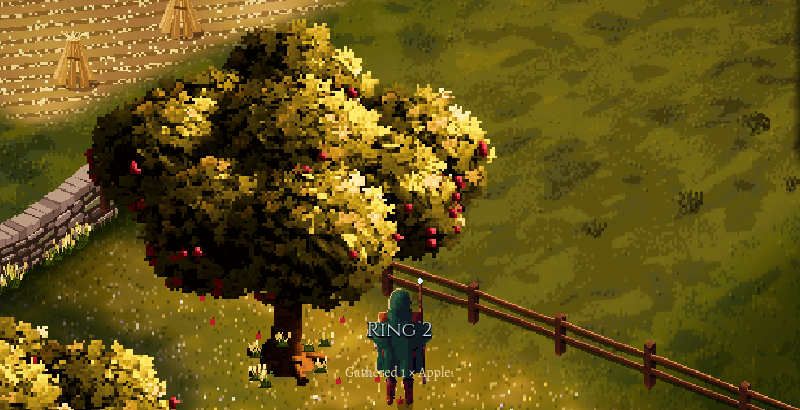
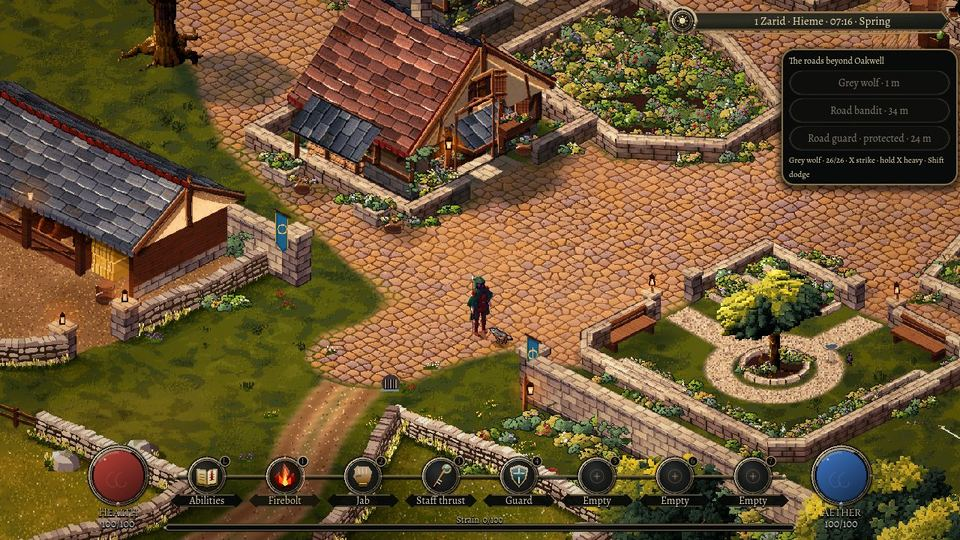
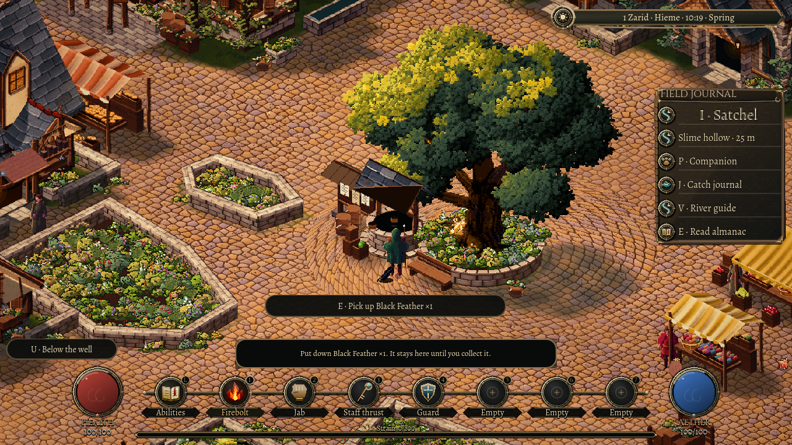

A day in Oakwell
Oakwell is the market town where every game of Sprawl begins, and for now it is the game. This is what you can do there today, and what is still on its way.

Arrive as yourself
The game opens on a title over the dimmed square. New Game opens a character creator built on the same procedural body as everyone else in Sprawl: muscle, weight, height, shape and age, skin and hair, and six starting outfits made from the game's own clothes. There is no class to pick. Your trade and your vows come from what you do.
Oakwell is the same town in every life, with the same people at its heart, so a new game is a new life in a familiar place. Continue brings back the person you were, on the day you left.

A town that keeps its own hours
Cobbled lanes run past the well and the old tree in the square, the market stalls, the church and houses with solid walls and real doorways. Step inside and the roof and the near walls lift away. Townsfolk work, trade and talk, and a fight nearby sends them home by a safe way round. When the market day ends, night falls and the stalls close until morning. Cats watch the rats in the gutters, and sparrows scatter across the cobbles.
People own things. Walk into one household's home uninvited, open its chest or break its crockery, and the family can notice, warn you and remember. Quiet feet can leave its sleepers undisturbed; a loud mistake gives them something to investigate.

Work with your hands
Gather herbs in the gardens, have Ysolde name what you found, and brew a healing draught at the garden cauldron. Shape a mortar from carried stone. Pick up windfall fruit in the orchard. Mine the outcrops beyond the walls and learn to read what a seam still holds. Take on commissions whose payment comes out of a real till, or help bring the inn the grain it is missing.
Everyday skills grow from useful work and stay open to everyone. Choosing one major profession, such as the Herbalist, unlocks deeper methods of your own. Grind enough herbs by hand and you begin to understand repetition well enough to set the watermill turning a grinder for you.

Fight, or choose not to
Beyond the gates, the roads have a grey wolf, an armed bandit and a guard who keeps the peace. Your oak staff, your fists and a firebolt share the same few actions: strike, hold for a heavy blow, dodge and guard. Seven ability slots hold what you learn, using an ability earns choices that develop it, and blows landed in rhythm build a combo.
Every fight is a choice. A wolf leaves remains to skin, with no coins inside it. A bandit carries a real sword and purse. Strike the guard and you may end up in the holding pen, serving a short sentence or paying the fine from money you actually have.

Below the well, behind the smoke
A cold draught at the well leads down: a dry ledge, an old service passage and a culvert that opens at the town's edge. Buy sound climbing gear first. Clues above and below the town, a word with the smith and a pick from the merchant's stock turn that route into an expedition worth packing for.
West of the gate, an old wood closes over the path. In a woodcutters' clearing, a hollow stump holds a veil of smoke: the way into the Teeming Barrow, a root hollow whose creatures warn before they strike and leave behind what they were.

What you do becomes who you are
Essence gathers from everything you do: a walk over new ground, a bargain struck, a spell shaped in a fight. Motes fly in and a ring fills around your health vial. Each ring brings points to place, and every fifth ring a talent to choose. A caption names what fed you, and Rings of a Life shows where your growth has come from.
A bottled slime from the merchant can become a companion, shaped by what you feed it.

Still yours when you return
Put a feather down in the square, quit and come back: it is still your feather, in that square. Your bag, your growth, a worked seam, a gathered apple, a household's memory of you and the side of a dungeon's veil you stood on are saved together, and Continue picks up from there.

Still on its way
- Walking out of Oakwell across the county, to its other towns and to the city of Marlbury, as the same person.
- Hunting in the wider countryside, and selling what you hunt to buyers who price it by their own stock.
- Clothes and weapons worn from your bag and shown on your figure.
- Fishing from Oakwell's own banks; it works today in the riverside town of Kilnworth.
- Deeper dungeons, and other kinds of entrance.
- More of the magic lattice, the notice board of petitions, and other systems still moving across from the older test world.
- Human playtests of a whole day in Oakwell, and a version for phones.
Everything above the line runs in the game today, though much of it has so far been checked by automated play rather than by players. The dev blog follows each piece as it arrives. Read the dev blog.